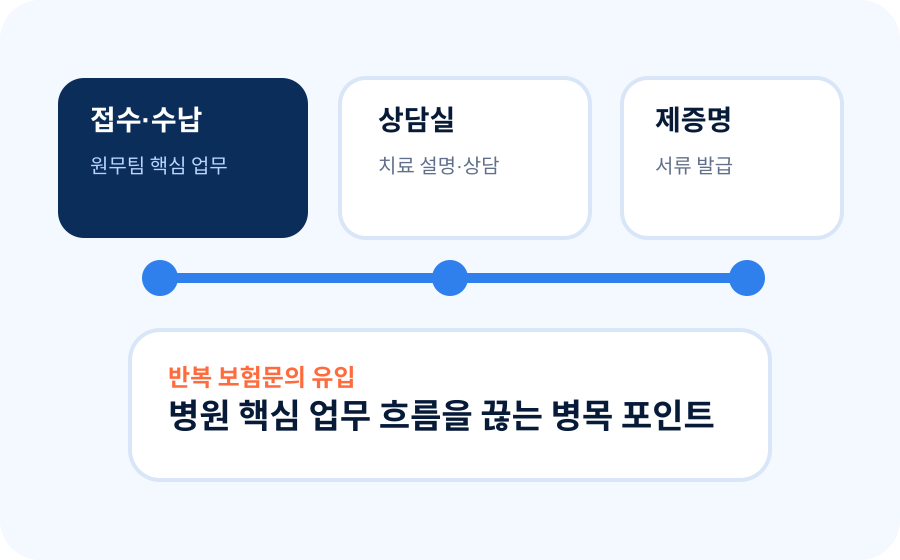
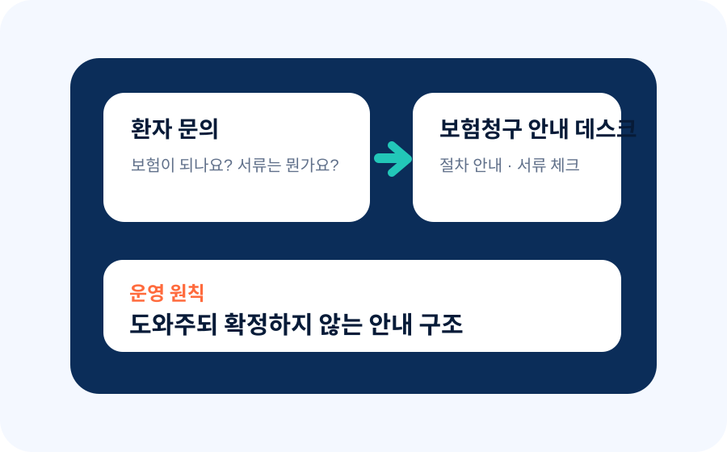
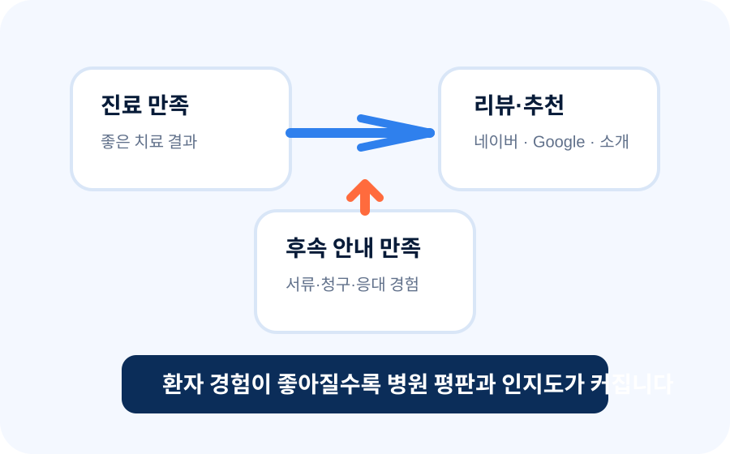

병원 안에서 운영되는 보험청구·환자경험 인하우스 솔루션
Issue
보험 문의·민원 리스크
Impact
상담실·원무팀
업무 과부하
Solution
병원 인하우스
안내 데스크
Value
환자 신뢰·리뷰
인지도 확산
병원 현장의 보험 문의 리스크를 운영 체계로 해결합니다. 병원 보험 문의, 운영 체계로 해결합니다.
병원은 환자에게 필요한 의료 설명과 비급여 고지를 수행해야 합니다. 그러나 보험 적용 가능 여부, 급여·비급여와 실손 보상 차이, 세대별 실손보험 구조, 예상 수령액과 청구 가능성까지 병원 명의로 단정해 설명하기는 쉽지 않습니다. 동시에 진료 후 안내 경험은 환자 신뢰, 리뷰, 소개와 같은 병원 평판에도 영향을 줍니다. 보험청구 안내 데스크는 이 복합 문제를 병원 운영 체계 안에서 정리하여 직원의 업무 과부하를 줄이고, 환자에게는 더 신뢰감 있는 후속 안내 경험을 제공하며 병원의 인지도 확산에도 기여합니다.
보험 적용 여부, 실손 보상 차이, 예상 수령액은 환자별 조건과 보험사 심사에 따라 달라집니다. 보험청구 안내 데스크는 이 복잡한 문의를 병원 업무와 분리해 직원 부담을 줄이고, 환자에게는 더 신뢰감 있는 후속 안내 경험을 제공합니다.
업무 과부하
안내 데스크
인지도 확산
실손보험 청구 안내 · 서류 체크 · 문의 이관 · 후속 경험 관리
병원장·행정부장·원무팀이 바로 이해할 수 있도록, 운영·리스크·환자경험·평판효과까지 한 화면에 보이는 프레젠테이션형 구조입니다.

병원 동선·직원 업무 흐름 분석상담실, 원무팀, 제증명, 수납 구간에서 반복되는 보험 문의 흐름을 눈에 보이게 정리합니다.

보험청구 안내 데스크 운영 분리실손보험 청구 절차, 서류 체크, 반복 문의 이관을 별도 창구로 구조화합니다.

환자 신뢰·리뷰·인지도 확산후속 안내 경험이 좋아질수록 네이버·Google 리뷰와 추천으로 이어질 가능성이 높아집니다.
Four Professional Lenses
운영자·직원·법적·마케팅 관점에서
운영자·직원·법적·마케팅 관점에서
모두 설명 가능한 구조
병원에서 신뢰를 얻는 기준은 명확합니다.
누가 왜 필요로 하는지, 어떤 부담을 줄이는지, 어떤 경계 안에서 운영되는지,
그리고 어떤 환자 경험과 평판 효과를 만드는지까지 설명할 수 있어야 합니다.
병원이 납득하려면 네 가지가 보여야 합니다.
필요성, 업무분담, 법적 경계, 그리고 평판 효과입니다.
병원 경영 관점
- 보험 문의와 민원 리스크를 운영 체계로 분리합니다.
- 환자 후속 안내 경험을 병원 신뢰 자산으로 전환합니다.
- 반복 문의 데이터를 통해 운영 개선 포인트를 파악합니다.
근무자 관점
- 상담실과 원무팀의 보험 관련 설명 부담이 줄어듭니다.
- 직원은 접수·수납·상담·제증명 본연의 업무에 집중합니다.
- 이관 기준이 명확해져 소모성 응대와 내부 재문의가 감소합니다.
의료법·보험 관련 관점
- 비급여 고지와 보험 보상 판단 영역을 분리해 설명합니다.
- 병원 명의의 단정적 보험 해석을 피하는 원칙을 세웁니다.
- 보험영업으로 오해받지 않는 안전한 경계선을 유지합니다.
병원 홍보·마케팅 관점
- 후속 안내 경험을 환자 만족과 리뷰 확산의 계기로 만듭니다.
- “끝까지 챙겨주는 병원”이라는 인식을 형성해 소개·재방문 가능성을 높입니다.
- 광고 문구가 아닌 실제 경험 기반의 평판 자산을 쌓을 수 있습니다.
Current & Future Risk
병원 현장에서 이미 발생하고,
병원 현장에서 이미 발생하고,
앞으로 더 커질 수 있는 문제
이미 발생했고,
더 커질 수 있는 문제
보험 문의는 단순한 친절 응대가 아니라 병원 운영, 직원 피로도, 환자 민원, 법적 경계, 그리고 병원 인지도와 평판 형성까지 만나는 복합 이슈입니다.
01
환자는 보험을 병원에 묻습니다
진료비를 낸 환자는 자연스럽게 “보험이 되나요?”, “얼마나 받을 수 있나요?”라고 묻습니다. 그러나 답변의 결과는 보험사 심사와 약관에 따라 달라집니다.
02
급여·비급여 설명과 실손 보상 설명은 다릅니다
병원은 의료행위와 비용에 대한 설명을 해야 하지만, 실손보험 보상 가능성과 지급금액은 환자 계약과 보험사 심사의 영역입니다.
03
실손보험 세대가 늘수록 설명 난도가 올라갑니다
세대별 약관, 자기부담률, 특약, 급여·비급여 구조가 달라지면 병원 직원이 환자별 보험 결과를 예측해 말하기는 더욱 어려워집니다.
04
반복 질문은 직원의 핵심 업무를 잠식합니다
상담실과 원무팀은 예약, 접수, 수납, 제증명, 진료 안내만으로도 바쁩니다. 보험 질문이 누적되면 업무 속도와 응대 품질이 동시에 떨어집니다.
05
의료시설과 의료진이 좋아도, 전달되지 않으면 인지도는 커지지 않습니다
의료 서비스의 질이 높더라도 환자가 진료 후 과정을 불편하게 느끼면 병원 평판은 제한됩니다. 좋은 의료 경험이 좋은 후기 경험으로 연결되어야 인지도가 커집니다.
06
후속 안내 경험은 리뷰·추천·재방문을 좌우합니다
환자는 치료 결과뿐 아니라 서류 발급, 청구 안내, 질문 응대까지 함께 기억합니다. 이 과정이 정돈될수록 네이버·Google 리뷰, 보호자 추천, 지역 내 신뢰 확산에 도움이 됩니다.
Compliance Boundary
안내 데스크는 병원과 환자를
안내 데스크는 병원과 환자를
모두 보호하는 경계선입니다.
병원과 환자를 보호하는
안내 운영 경계선
핵심은 “도와주되, 확정하지 않는 것”입니다. 보험금 지급 여부, 보장 가능성, 의료행위의 보험상 평가를 병원 명의로 단정하지 않고 환자가 보험사·약관 기준을 확인할 수 있도록 안내합니다.
NO보험금 지급 가능 여부 확정 답변
NO예상 보험금 단정 안내
NO병원 명의의 보험 약관 해석
NO환자에게 보험상품 권유 및 설계 전환
NO청구만 원하는 환자에게 신규 보험 가입 유도
NO의료진 판단을 대신하는 설명
Operating Model
병원 업무와 보험 문의를
병원 업무와 보험 문의를
역할 기준으로 분리합니다
병원이 해야 할 설명, 안내 데스크가 할 청구 안내, 보험사가 확정할 판단을 분리하면 민원과 업무 부담이 함께 줄어듭니다.
| 환자 질문 | 병원 담당 영역 | 안내 데스크 담당 영역 | 최종 확인 영역 |
|---|---|---|---|
| 이 진료가 급여인가요, 비급여인가요? | 의료기관 고유의 진료·비용 설명 | 보험 보상 문의와 구분 안내 | 병원 고지 기준 |
| 실손보험으로 받을 수 있나요? | 단정적 보상 답변 지양 | 청구 절차와 보험사 확인 경로 안내 | 보험사 약관·심사 |
| 보험금이 얼마 나오나요? | 예상 지급액 확정 안내 지양 | 세대별 차이와 자기부담 구조 설명 | 보험사 지급 심사 |
| 무슨 서류가 필요한가요? | 진료확인서·영수증 등 서류 발급 | 제출 서류 체크와 청구 절차 안내 | 보험사 제출 기준 |
Process
도입 프로세스
병원 동선·환자 흐름·보험 문의량·직원 업무량을 정량·정성으로 진단한 뒤,
병원 맞춤형 운영안·응대 스크립트·제안 프레젠테이션까지 일관되게 설계합니다.
병원 동선과 보험 문의 흐름을 진단하고,
운영안·응대 스크립트·제안서를 함께 설계합니다.
- 01. 현장 진단
상담실·원무팀의 반복 문의 유형, 환자 동선, 민원 발생 가능 지점을 파악합니다.
- 02. 응대 범위 설계
병원이 직접 설명할 영역과 데스크가 안내할 영역을 구분하고 금지 표현을 정리합니다.
- 03. 데스크 설치·운영
병원 브랜드와 동선에 맞춰 인하우스 안내 데스크를 배치하고 운영합니다.
- 04. 직원 이관 매뉴얼
상담실·원무팀이 어떤 질문을 데스크로 넘길지 간단한 스크립트를 제공합니다.
- 05. 운영 리포트
문의 건수, 이관 건수, 주요 질문 유형, 개선사항을 병원과 정기 공유합니다.
Application
적용 분야를 병원 규모와 진료과별로 나눕니다
보험 문의는 특정 진료과만의 문제가 아닙니다. 병원 규모, 환자 수, 비급여 비중, 수술·검사·서류 발급량에 따라 운영 방식이 달라집니다.
병원 규모별 적용
여러 진료과와 원무 창구에 분산되는 보험 문의를 중앙 안내 데스크로 모아 민원 흐름을 표준화합니다.
안과·정형외과·치과처럼 수술·검사·비급여 설명이 많은 병원에서 상담실 부담을 구조적으로 낮춥니다.
환자 수가 많고 상담 인력이 분화된 병원에서 보험 문의를 별도 운영 파트로 분리해 병목을 줄입니다.
원무팀과 상담실 인력이 제한된 환경에서 반복 문의를 흡수해 핵심 업무 집중도를 높입니다.
직원 한 명이 여러 업무를 맡는 구조에서 보험 문의 응대 기준과 이관 창구를 만들어 부담을 줄입니다.
여러 원장·여러 진료과가 함께 운영되는 병원에서 공통 응대 기준과 보험 문의 분리 원칙을 통일합니다.
진료과별 적용
백내장, 렌즈, 검사, 비급여 항목 관련 실손 문의를 분리합니다.
도수치료, 주사치료, 물리치료, 진단서·소견서 문의를 구조화합니다.
비급여 진료와 보험 청구 가능성 문의가 섞이지 않도록 안내 경계를 세웁니다.
임플란트, 보철, 수술, 치아보험 서류 문의를 환자 동선에 맞게 안내합니다.
추가 검사, 검진 후 진료, 서류 발급, 보험사 제출 문의를 표준화합니다.
검사·수술·치료 후 민감한 보험 문의를 별도 창구에서 차분히 응대합니다.
수술, 검사, 처치 이후 필요한 서류와 청구 절차를 분리 안내합니다.
비급여 치료, 반복 치료, 실손 청구 문의가 많은 영역에서 직원 부담을 줄입니다.
Hospital Leadership Q&A
병원 최고책임자 및 관리자 Q & A
단순 홍보처럼 보이지 않도록, 병원 최고책임자와 관리자가 실제 검토하게 되는 질문을 먼저 제시하고 답합니다.
Q1. 보험 문의는 원무팀이 지금도 하고 있는데, 왜 별도 데스크가 필요합니까?
원무팀의 본업은 접수·수납·제증명·행정 처리입니다. 보험 문의는 약관, 세대, 보장구조, 보험사 심사가 얽혀 있어 별도 기준 없이 원무팀이 계속 떠안으면 병목과 민원 리스크가 동시에 커집니다.
Q2. 환자가 “보험 된다면서요?”라고 문제 삼으면 어떻게 합니까?
운영 원칙은 확정 답변 금지입니다. “보험금이 나온다”가 아니라 “보험사 확인이 필요하다”, “청구 절차와 필요 서류를 안내한다”는 표현으로 경계를 유지합니다.
Q3. 의료법이나 보험영업으로 오해받을 위험은 없습니까?
보험상품 권유, 신규 가입 유도, 보험금 지급 단정, 의료진 판단 대체는 운영 범위에서 제외합니다. 병원의 의료 설명과 보험사의 보상 판단 사이에 안내 경계를 두는 구조입니다.
Q4. 병원 규모가 작아도 효과가 있습니까?
오히려 소규모 병원은 한 직원에게 접수·수납·상담·서류 업무가 몰리는 경우가 많습니다. 반복 보험 문의만 분리해도 직원 피로도와 환자 대기 불만을 줄일 수 있습니다.
Q5. 도입 후 어떤 지표를 볼 수 있습니까?
문의 건수, 문의 유형, 데스크 이관 건수, 보험사 확인 안내 건수, 반복 민원 유형, 직원 문의 감소 체감 등을 운영 리포트로 정리할 수 있습니다.
Q6. 병원 신뢰에 어떤 도움이 됩니까?
환자는 진료 이후 청구 절차까지 안내받을 때 “병원이 끝까지 챙긴다”고 느낍니다. 병원은 단정적 보험 설명을 피하면서도 환자 경험을 개선할 수 있고, 이러한 경험은 병원의 신뢰 자산으로 축적됩니다.
Q7. 병원을 홍보하고 믿을 수 있다는 마케팅으로도 활용할 수 있습니까?
네. 핵심은 과장된 광고가 아니라 실제 환자 경험을 좋게 만드는 것입니다. 보험청구 안내 데스크가 서류 안내, 청구 절차, 반복 문의 대응을 안정적으로 지원하면 환자는 “진료 후에도 끝까지 챙겨주는 병원”이라고 느끼게 됩니다. 이런 경험은 네이버·Google 리뷰, 보호자 추천, 지역 커뮤니티 언급으로 이어질 가능성을 높이며, 병원의 신뢰 자산과 검색 인지도, 재방문·소개 유입 확대에 긍정적으로 작용합니다.
Q8. 의료시설과 의료진이 좋은데도 왜 마케팅 관점을 같이 봐야 합니까?
의료의 본질은 치료이지만, 환자가 병원을 기억하는 방식은 치료 결과만으로 결정되지 않습니다. 예약부터 수납, 서류, 청구 안내, 후속 설명까지의 전 경험이 병원 평판을 만듭니다. 따라서 좋은 의료 역량이 실제 인지도와 추천으로 연결되려면 후속 안내 경험까지 함께 설계되어야 합니다.
Contact
우리 병원에 맞는 보험청구 안내 데스크 운영안을 받아보세요.
병원명, 담당자 연락처, 현재 고민을 남겨주시면 병원 동선과 업무 흐름에 맞는 도입 방안을 상담해드립니다.
전화 상담
010-8416-8623
평일 09:00 - 18:00 상담 가능
이메일 문의
insung9908@naver.com
도입 문의 자료를 보내주세요
카카오톡 상담
카카오 채널 연결 예정
채널 주소 확보 후 즉시 연결 가능
운영시간: 평일 09:00 - 18:00
문의 접수: insung9908@naver.com 자동 알림
※ 본 서비스는 보험금 청구 편의 지원 및 병원 운영 효율 개선을 위한 서비스입니다. 보험금 지급 여부를 보장하거나 의료적 판단을 대신하지 않습니다. 법률·보험 규정은 병원별 상황에 따라 별도 검토가 필요합니다.
접수 완료
문의가 정상 접수되었습니다.
남겨주신 병원명, 연락처, 문의 내용은 담당자 이메일로 전달되었습니다. 병원 업무 흐름과 도입 목적을 확인한 뒤 연락드리겠습니다.
- 1문의 내용 확인
- 2병원 업무 부담 영역 검토
- 3보험청구 안내 데스크 도입 상담
급한 문의는 010-8416-8623으로 연락해 주세요.